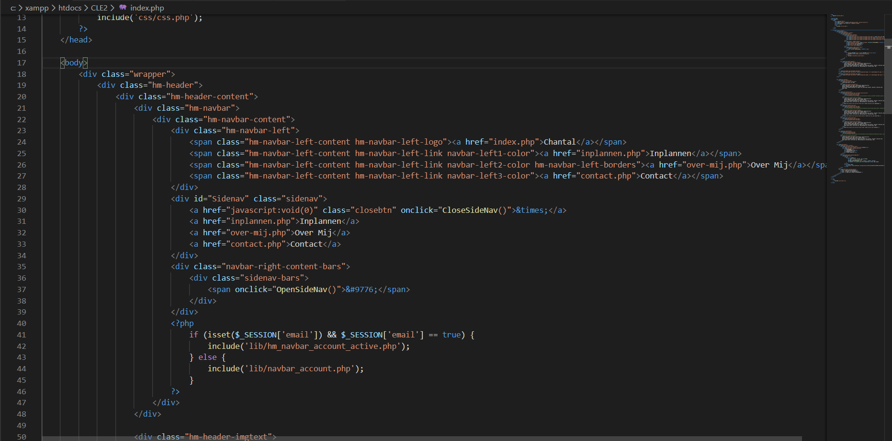
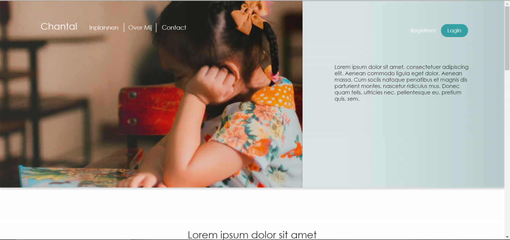

Web Development
Sinds de middelbare school ben ik al geïnteresseerd en bezig met
web development en daarom ben ik een studie gaan doen in deze sector.
Sindsdien heb ik mezelf verbeterd in dit vakgebied en nu ben ik bezig
voor een school project met het bouwen van een website voor een klant.


De site die ik aan het programmeren ben bevat een login, een registratie systeem en
een reserveringsysteem. De talen waar ik momenteel mee kan programmeren
zijn: HTML, CSS, JS, SQL en PHP.
Designs
Designen doe ik vooral in photoshop maar dat kan ik ook in
blender en enige teken programma's zoals autodesk sketchbook
en paintstorm. Ik werk via muis en toetsenbord maar kan ook
werken met teken tablets.


Ook design ik zelf de layout van de websites die ik maak.
Dit kan ik via high fidelity wireframes, een afbeelding,
simpele tekening en/of een omschrijving. Mijn opdrachtgever
voor mijn project gaf mij veel ruimte in het designen, ze wilde
alleen een paar specifieke kleuren niet. Behalve het web
design, heb ik het logo van deze site en de project site
ontworpen.
Producer
Een van mijn hobby's is het maken van muziek, en dan
met name EDM. Dit doe ik in FL Studio sinds 2016.
De genres die ik maak uit het EDM zijn vooral future bass,
big room, (hybrid) trap en progressive house.
Momenteel heb ik nog geen projecten online staan. Dit komt
vooral omdat ik nog geen naam heb.